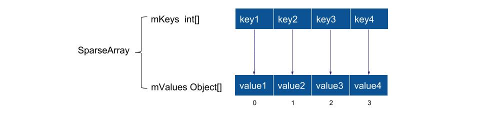

SparseArray
SparseArray 可以替代 HashMap<Integer,Object> 使用，在数据量不大的情况下，虽然查询效率达不到 O(1)，但 SparseArray 能节约更多内存，在移动端上更加适用。
简单来说 HashMap 的实现是用空间换时间，而 SparseArray 是用时间换空间。
SparseArray 主要技术点：
使用原始 int 作为 key，避免自动装箱
使用二分查找定位 key
延迟删除、复用 delete 项
主要成员变量
1
2
3
4
5
6
7
8
| public class SparseArray<E> implements Cloneable {
private static final Object DELETED = new Object();
private boolean mGarbage = false;
private int[] mKeys;
private Object[] mValues;
private int mSize;
}
|

从结构上看比 HashMap 简单了很多，占用的内存也更少了。
gc
先看一下比较有特色的 GC 流程，SparseArray 的 GC 用的是”标记整理“算法。
1
2
3
4
5
6
7
8
9
10
11
12
13
14
15
16
17
18
19
20
| private void gc() {
int n = mSize;
int o = 0;
int[] keys = mKeys;
Object[] values = mValues;
for (int i = 0; i < n; i++) {
Object val = values[i];
if (val != DELETED) {
if (i != o) {
keys[o] = keys[i];
values[o] = val;
values[i] = null;
}
o++;
}
}
mGarbage = false;
mSize = o;
}
|
put
在看 put 之前补一下按位取反的知识，就比较好理解代码为什么这么处理了。
所有正整数的按位取反是其本身+1的负数，所有负整数的按位取反是其本身+1的绝对值，零的按位取反是 -1
put 方法流程：
二分查找 key，找到返回正数，否则返回左指针的负值（ ~ 按位取反后就是要插入的位置）；
如果存在则更新数值，返回；
如果对应位置被标记为 DELETED ，复用，返回；
如需要 GC ，GC 后重新查找插入位置；
插入数据，如果 mSize 不够则乘 2 扩容复制；
1
2
3
4
5
6
7
8
9
10
11
12
13
14
15
16
17
18
19
20
21
22
23
24
25
26
| public void put(int key, E value) {
int i = ContainerHelpers.binarySearch(mKeys, mSize, key);
if (i >= 0) {
mValues[i] = value;
} else {
i = ~i;
if (i < mSize && mValues[i] == DELETED) {
mKeys[i] = key;
mValues[i] = value;
return;
}
if (mGarbage && mSize >= mKeys.length) {
gc();
i = ~ContainerHelpers.binarySearch(mKeys, mSize, key);
}
mKeys = GrowingArrayUtils.insert(mKeys, mSize, i, key);
mValues = GrowingArrayUtils.insert(mValues, mSize, i, value);
mSize++;
}
}
|
insert 与扩容
数组的插入和扩容的具体实现在 GrowingArrayUtils 里，
当前容量足够，腾出位置直接插入；
1
2
3
4
5
6
| if (currentSize + 1 <= array.length) {
System.arraycopy(array, index, array, index + 1, currentSize - index);
array[index] = element;
return array;
}
|
容量不够，先乘以 2 扩容后再腾出位置直接插入；
1
2
3
4
5
6
7
8
|
T[] newArray = ArrayUtils.newUnpaddedArray((Class<T>)array.getClass().getComponentType(), growSize(currentSize));
System.arraycopy(array, 0, newArray, 0, index);
newArray[index] = element;
System.arraycopy(array, index, newArray, index + 1, array.length - index);
return newArray;
|
delete
删除的方法比较简单，找到对应 key 的 index，标记为 DELETED 状态，设置垃圾回收状态。
1
2
3
4
5
6
7
8
9
10
| public void delete(int key) {
int i = ContainerHelpers.binarySearch(mKeys, mSize, key);
if (i >= 0) {
if (mValues[i] != DELETED) {
mValues[i] = DELETED;
mGarbage = true;
}
}
}
|
总结
SparseArray 的代码实现比较简单，延迟删除复用的特点使其适合于数据量小、重复使用、快速读写的场景。
缺点：